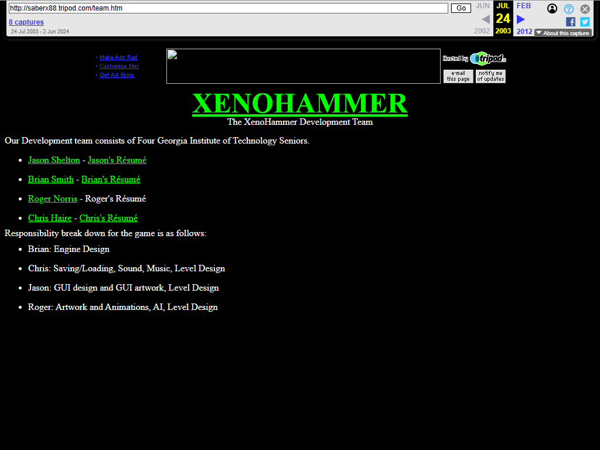
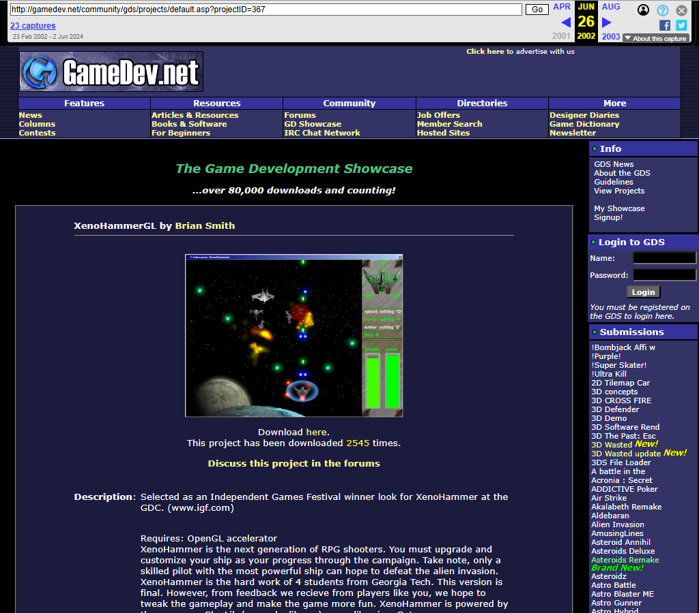
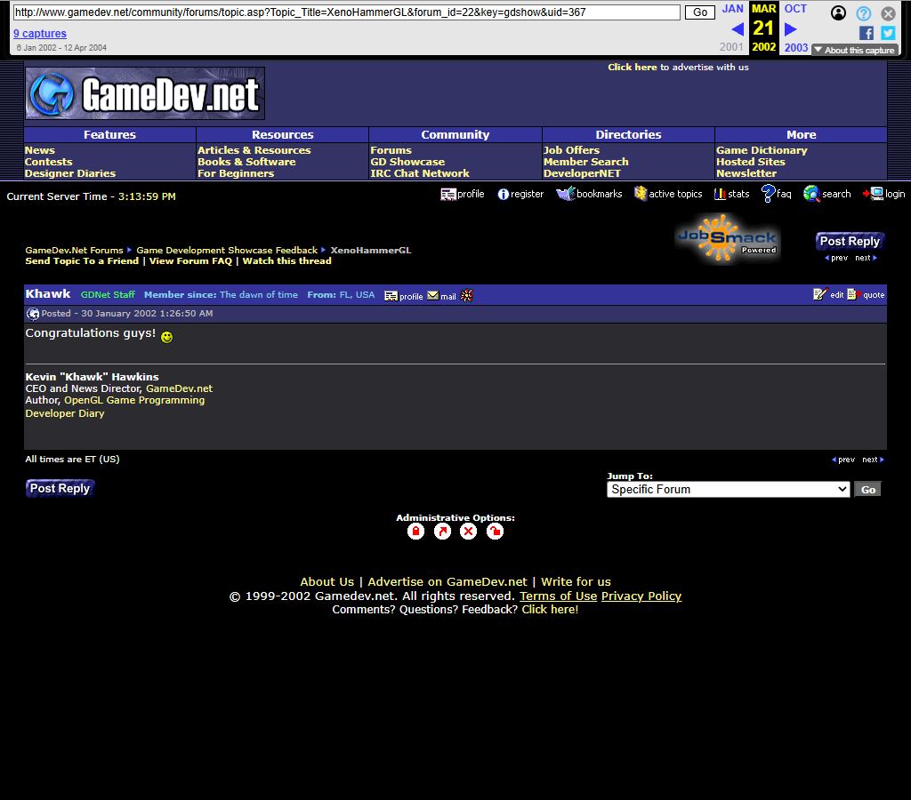
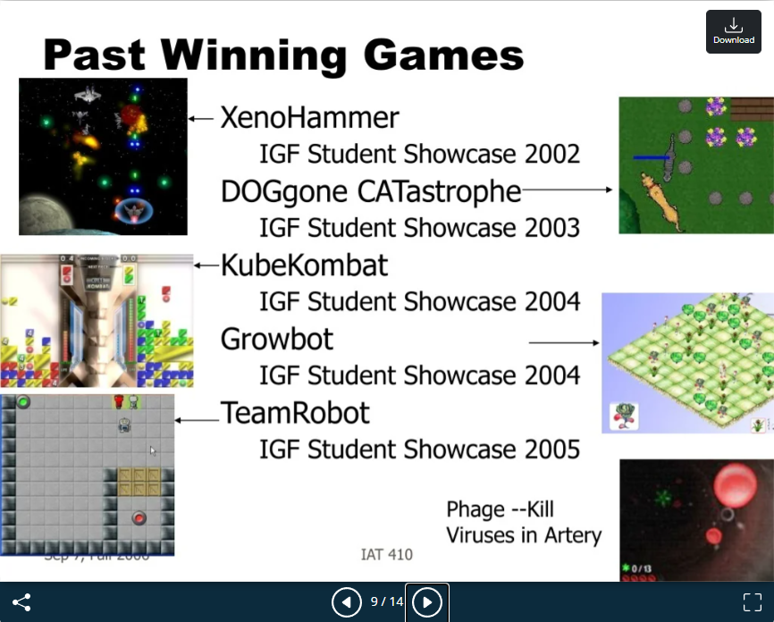
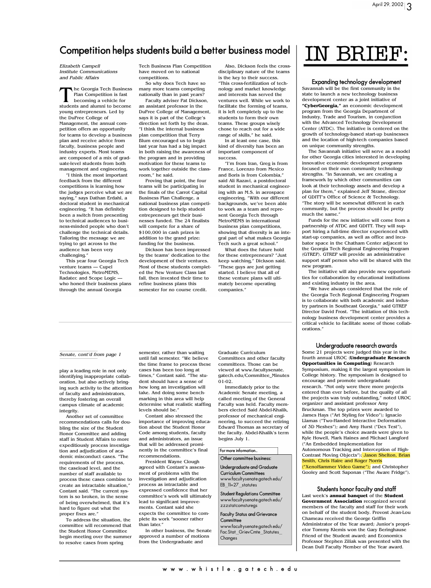
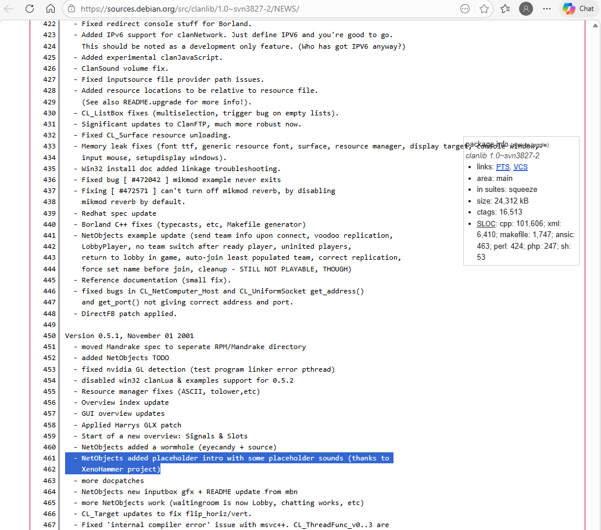

Tripod Dev Site
The original home site with the team pitch, alpha-release copy, feature bullets, and the public-facing XenoHammerGL positioning.
Preserved History & Original Materials
Nine preserved exhibits from across the web—the original Tripod dev site, press coverage, awards announcements, and community references—all captured and hosted locally.
The original home site with the team pitch, alpha-release copy, feature bullets, and the public-facing XenoHammerGL positioning.

The original team page preserving the Georgia Tech roster and role breakdown for Brian Smith, Chris Haire, Jason Shelton, and Roger Norris.

The Game Development Showcase page for project ID 367, preserved as a local rendered exhibit.

The showcase feedback thread, anchored by the congratulatory post from GameDev.net staff.

Event coverage praising the game’s explosions, naming the Georgia Tech team, and noting the 2.5 month build.

The formal announcement that XenoHammer was one of the ten 2002 IGF Student Showcase selections.

XenoHammer cited as a past IGF Student Showcase winner in a Georgia Tech game design course slide deck.

Georgia Tech campus news listing XenoHammer in the awards section, preserved from the original PDF.

ClanLib 0.5.x and 0.6.x release notes closest to XenoHammer’s original development window.